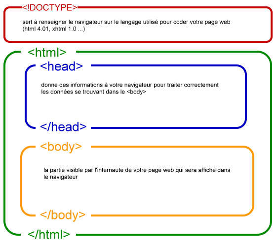

premier pas avec html
definition
Le HTML (ou HyperText Markup Language) est, après une traduction littérale de l'anglais, un langage hypertexte à balises (ou marqueurs). Cela veut dire que l'on va gérer la façon dont un texte va s'afficher au sein du navigateur. Ainsi, on peut voir dans tout code source HTML en comparaison d'un éditeur de texte (comme Word pour le plus connu), des différences marquantes, comme des balises (ou marqueurs) dans le texte d'une page web. Les images, sons et autres contenus multimédias ne se retrouvent pas dans une page web visualisée sous forme de code. Par contre, si on visualise dans un navigateur cette page web, alors les images et les sons la composant seront là. La différence entre les deux réside dans le simple fait que les contenus multimédias comme les paramètres de formatage du document sont sous la forme de texte inclus au sein de ces balises précédemment citées. Donc, HTML n'est pas un langage de programmation au sens classique du terme, mais est essentiellement un langage de formatage du texte, permettant l'habillage de pages web qui sans celui-ci seraient bien dénuées d'intérêt.
Structure d'une page HTML
Une page HTML a une structure particulière, que vous devrez intégrer dans tous vos fichiers HTML ! Il n'y a pas grand chose à expliquer, il suffit d'apprendre, et de l'appliquer ;-)
Les outils du HTML
Pour éditer vos pages HTML, vous avez besoin de deux outils : un éditeur de texte tout simple comme par exemple le Notepad de Windows, ou vi sous UNIX, ou tout autre équivalent dans votre système d'exploitation. Un butineur (browser) : Netscape Navigator (http://home.netscape.com) ou Microsoft Internet Explorer (http://www.microsoft.com) ; je vous conseille même d'en avoir un de chaque car l'ascept change selon la version et le distributeur. Pour éditer vos pages HTML, vous N'avez PAS besoin : d'être connecté ; en effet, tous les butineurs fonctionnent hors-connexion. Ils suffit de stocker vos pages sur votre disque-dur ; si vous avez un site, vous les enverez quand les pages seront terminées. d'avoir le dernier éditeur HTML certainement très performant mais inutile pour quelqu'un qui débute. Les éditeurs d'Html ne sont pas parfaits ; ainsi le code source de la page HTML contient beaucoup d'informations inutiles quand vous utilisez ces éditeurs. Il est bon de connaitre un minimum le fonctionnement du langage et les balises principales pour corriger le code rapidement. Il est aussi nécessaire de connaitre le langage HTML pour pouvoir plus tard insérer des codes Javascript, Jscript ou applets.